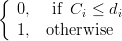

In a shop scheduling problem, a set of jobs has to be processed on a set of machines in a
predefined machine environment under various additional constraints in such a way
that an objective function becomes optimal. The problem is called deterministic, if all
parameters are known and fixed. A number of optimization problems where one looks for an
optimal sequence of activities under constrained resources can be modeled as a scheduling
problem.
The following Table 2.1 contains the basic definitions used in LiSA:
| Notations | |
| n, m | Number of jobs and number of machines |
| {A1,…,An} | Set of jobs to be processed |
| I = {1,...,n} | Set of indices of the jobs |
| {M1,…,Mm} | Set of machines which process the jobs |
| J = {1,...,m} | Set of indices of the machines |
| pij ≥ 0 | Processing time of job Ai on machine Mj |
| PT = [pij] | Matrix of the processing times |
| (ij) | Operation, i.e. the processing of job Ai on Mj |
| SIJ | Set of operations (ij) |
| ui, vj | Number of operations of Ai and on Mj, respectively |
| cij | Completion time of operation (ij) |
| Ci | Completion time of job Ai |
| C = [cij] | Matrix of the completion times |
| ri, di | Release date and due date of job Ai, respectively |
| wi | weight of job Ai |
| Li = Ci − di | Lateness of job Ai |
| Ti = max{0,Ci − di}; | Tardiness of job Ai |
| Ui =  | ∑ Ui counts the number of late jobs |
For a scheduling problem with more than one machine, we introduce the following sequences:
The machine order of a job Ai is the sequence of machines which the job has to be
processed: Mj1i → M
j2i →… → M
juii, where j
1,…,jui is a permutation of the numbers
1,…,ui.
The job order on machine Mj is the sequence of the jobs processed on this machine Ai1j → A i2j →… → A ivjj, where i 1,…,ivj is a permutation of the numbers 1,…,vj. If not causing confusion, we drop the superscripts.